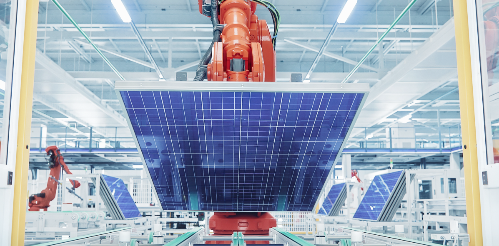

Intelligent production
Reduction gears are an integral component in the implementation of smart manufacturing processes. By adjusting the speed and torque of rotating machinery, reduction gears enhance the accuracy, efficiency, and safety of production lines. As technology advances, these gears have become smaller, more durable, and capable of integrating with digital systems, allowing real-time monitoring and control. By leveraging the full potential of reduction gears in smart manufacturing, organizations can optimize their operations and stay ahead of the competition.